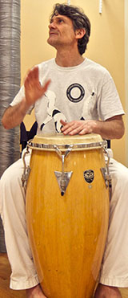
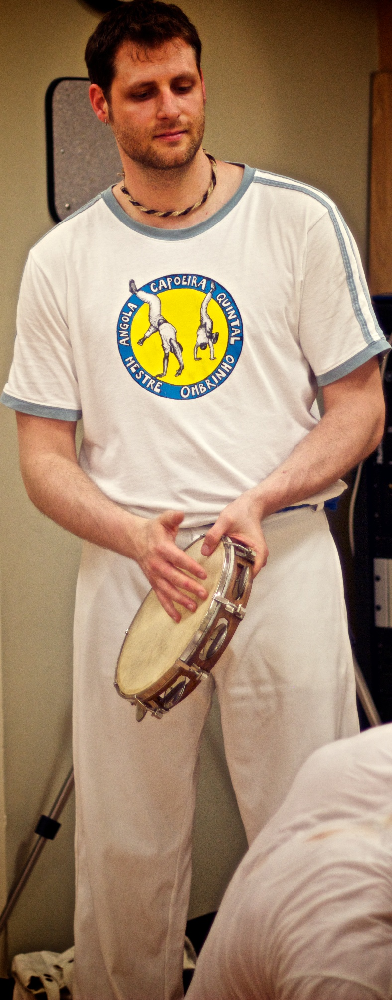
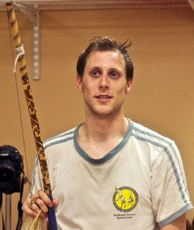
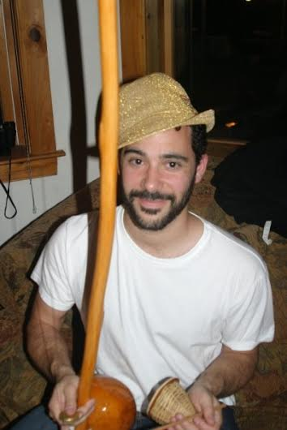

Capoeira is a martial art, hidden in dance. It was brought to Brazil by enslaved Africans in the mid 1500s. After the abolition of slavery, capoeira survived in Brazil's poorer neighborhoods despite government repression and police persecution. Today, Capoeira is taught around the world, with each group incorporating its own blend of movements, music, and philosophy.
We train and play in a supportive environment that emphasizes a thoughtful, creative, and technical approach to capoeira. Most classes begin with music, then movement training, and finally a roda.
Mestre Ombrinho is the head instructor at the New York Capoeira Center. With over 30 years practicing capoeira and over 24 years teaching, he is the first North American Capoeira Master. He is renowned for making the art of capoeira accessible to people of all ages and abilities. He began studying capoeira in 1981 with Mestre Acordeon and Mestre Jelon.
Contra Mestre Graveto of Capoeria Angola Negaça has over 20 years of experience playing and teaching capoeira throughout the United States. CM Graveto studied under the tutelage of Mestre Ombrinho, Mestre Nô, and Contra-Mestre Pererê and has dedicated himself to the continuation of capoeira angola.
Instrutor Gafanhoto started training capoeira in 2007 under Contra-Mestre Graveto of Capoeira Angola Negaca and continues on with Mestre Ombrinho of CAQ. Gafa strives to pass on a thoughtful and insightful approach provided by both of his teachers. Gafa is a filmmaker and is currently in post production for a film about capoeira centered around his visit to Salvador filming with Mestre Nô.
Monitor Gigante started training capoeira in 2007 under Contra-Mestre Carcará of Capoeira Mandinga Rochester. After moving to Boston, he became captivated by the strategy and style of capoeira angola and CAQ as taught through Mestre Ombrinho, Contra-Mestre Graveto, and Monitor Gafanhoto. Giga works in public health and is the proud papa of two boys.
 Music is fundamental to our practice. The songs, sung in Portuguese, transmit capoeira's history and philosophy. They are played with traditional instruments and employ different rhythms, which are carefully used to establish and react to the tone of the game. The music helps create the movement and the movement helps create the music. Through our music practice we learn to harmonize and improvise with the people around us, inside and outside of the roda.
Music is fundamental to our practice. The songs, sung in Portuguese, transmit capoeira's history and philosophy. They are played with traditional instruments and employ different rhythms, which are carefully used to establish and react to the tone of the game. The music helps create the movement and the movement helps create the music. Through our music practice we learn to harmonize and improvise with the people around us, inside and outside of the roda.

Capoeira began in Africa, was brought to Brazil, and is now spreading all over the world. It has survived repression from colonial slave-owners and authoritarian governments. CAQ Boston is part of capoeira's deep tradition and continuing evolution. Whether a beginner or a mestre, we all help to create great capoeira by sharing our sounds and movements.
On the Cambridge Common
Waterhouse St & Massachusetts Ave, Cambridge, MA 02138
Thurs: 7:30 pm - 9:00 pm
Sun: 4:00 pm - 5:30 pm